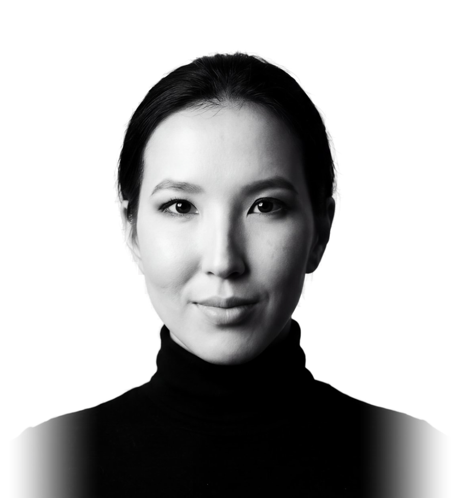
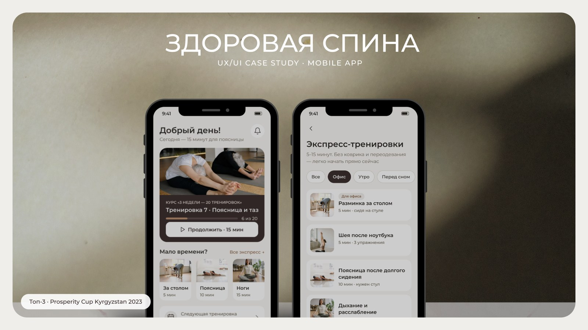
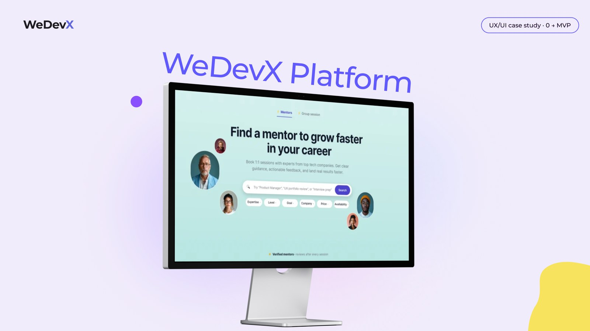
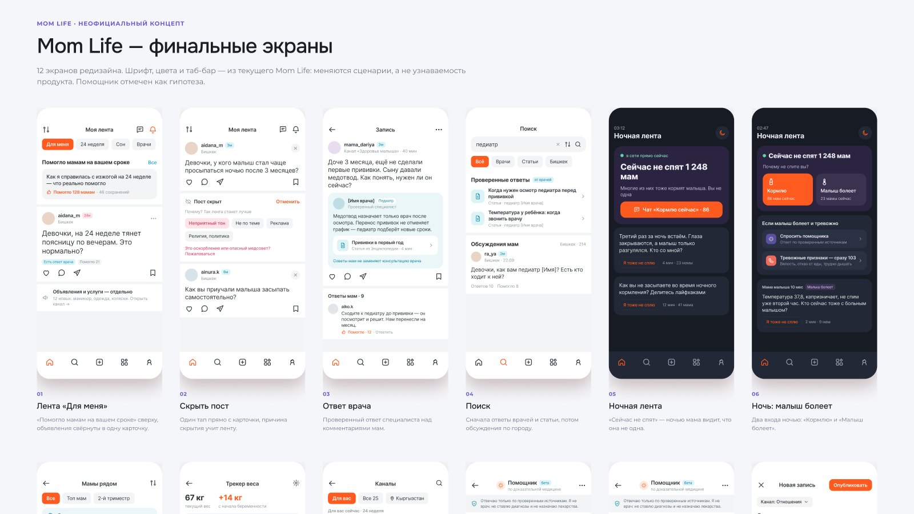

Портфолио · UX/UI дизайн · Бишкек
Алина
Рысмендиева
UX/UI дизайнер с бэкграундом архитектора. Проектирую понятные цифровые продукты так же, как раньше проектировала пространства: от сценариев людей к решению.

Обо мне
Из архитектуры —
в продуктовый дизайн
Архитектура
Композиция, сетки, иерархия. Сначала человек и задача, потом форма.
Интерьеры
Проекты под реальные сценарии жизни людей.
SMM
Понимать аудиторию и говорить с ней простым языком.
UX/UI
Опросы и интервью, инсайты, сценарии, прототип, проверка на пользователях.
Стажировка в стартапе WeDevX (прошёл акселератор Antler), затем свой продукт Healthy Back.
Кейс 01 · Health tech · 2023 — н. в.
Healthy Back
Сооснователь и единственный продуктовый дизайнер: исследование, продукт, бизнес-модель, UX/UI.
Инсайт
Самый большой сегмент, молодые офисные сотрудники, не готов платить. Платят женщины 40+ с хронической болью, и фокус продукта сместился на них.
Решение
Вместо длинной анкеты бот, карта тела, экспресс-тренировки на 5 минут, вход по номеру. Спрос проверили рекламой до разработки.

Кейс 02 · Edtech · 2022–2023
WeDevX
Стажировка в стартапе, единственный продуктовый дизайнер. Идею менторской платформы предложила сама.
Инсайт
93% студентов хотят ментора 1-на-1, но половина готова только на бесплатный формат. Курс заканчивался, а карьера — нет.
Решение
SkillPoints: доступ к ментору зарабатывается учёбой и активностью. Две дороги к сессии: баллы или $10–30.

Кейс 03 · Концепт редизайна · 2026
Mom Life
Неофициальный концепт. Шрифт, цвета и таб-бар оставила: менялись сценарии, а не узнаваемость продукта.
Проблема
Полезные ответы тонут в общей ленте и объявлениях, а советы мам выглядят так же весомо, как ответ врача.
Решение
Блок «Помогло мамам на вашем сроке», объявления свёрнуты в одну карточку, ответ педиатра над комментариями.

Спасибо
Давайте
поговорим
Открыта к стажировкам и junior-позициям UX/UI — в офисе в Бишкеке или удалённо.